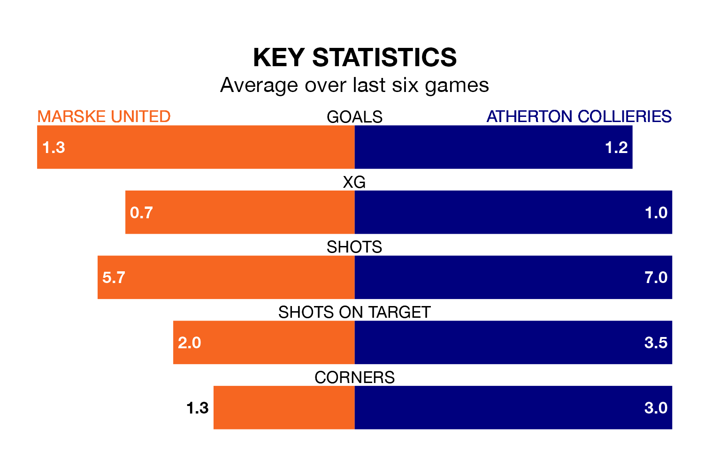

Saturday's match at the GER Stadium sees two relegation candidates play each other, as 20th-ranked Marske United host bottom of the table Atherton Collieries.
Marske have picked up 21 points from their first 21 Northern Premier League games, with seven wins and no draws.
That is two points more than Atherton Collieries have collected, having won five and drawn four.
Marske are in mixed form in the Northern Premier League, with three wins and three losses from their last six games.
With no wins and a draw over that period, Atherton Collieries's form is much worse – they have taken one point from 18, compared to United's nine.
With 42 goals in 33 games so far this season, the away side are scoring at below the league average rate with 1.3 goals per game. And they are conceding more than average, letting in 83 goals at a rate of 2.5 per game.
The hosts are also below average scorers, with 1.4 goals per game, compared to a league average of 1.6. They have conceded 2.4 goals per game.
In the last three years, Marske and Atherton Collieries have played each other on three occasions. Marske won one of them and Atherton Collieries the other.
Their last meeting was on October 21, when Marske won 4-1 away.
Marske's last match was on December 30, a 2-0 loss against Morpeth Town.
Atherton Collieries lost 2-1 against United of Manchester last time out, on March 16.
Updated: 10:19 (UTC), 22/03/24